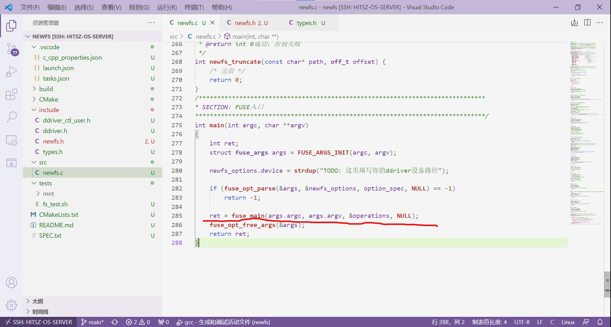

simplefs 参考实现导读¶
这页怎么用
- 这页的作用不是给出标准答案，而是帮助你更高效地阅读
simplefs。 simplefs最值得借鉴的是：函数拆分方式、目录项组织方式、挂载与卸载的总体流程。simplefs不能直接照搬 ，因为它的磁盘布局和本实验要求并不一致。
1. simplefs 整体结构：先看操作表和核心数据结构¶
simplefs 是一个已经能跑通基本功能的参考文件系统。它最大的价值在于：帮你看到一个 FUSE 文件系统从“注册钩子”到“维护 inode / dentry / 超级块”的完整闭环。
它的系统布局示意如下：
阅读 simplefs 时，建议先带着两个问题：
- 它是怎样把磁盘上的内容组织成目录树的？
- 它的各个 FUSE 钩子最终都落到了哪些辅助函数上？
1.1 操作表入口：先看 fuse_operations¶
FUSE 文件系统本质上是把一组回调函数注册给框架。真正需要你关心的，不是 fuse_main() 本身，而是这组操作表。
对于本实验，最值得先看的通常是这些钩子：
static struct fuse_operations operations = {
.init = newfs_init, /* 挂载文件系统 */
.destroy = newfs_destroy, /* 卸载文件系统 */
.mkdir = newfs_mkdir, /* mkdir：创建目录 */
.getattr = newfs_getattr, /* 获取文件属性；ls/stat 前经常会先调用 */
.readdir = newfs_readdir, /* 读取目录项 */
.mknod = newfs_mknod, /* touch：创建普通文件 */
.utimens = newfs_utimens, /* 修改时间；避免 touch 因时间更新报错 */
.write = NULL, /* 选做：写文件 */
.read = NULL, /* 选做：读文件 */
.truncate = NULL, /* 选做：修改文件大小 */
.unlink = NULL, /* 选做：删除文件 */
.rmdir = NULL, /* 选做：删除目录 */
.rename = NULL, /* 选做：重命名 / mv */
};
把这张表看懂之后，再去顺着每个函数往下追，会比一开始就钻进单个函数细节里更有效。
下图可以帮助你把“操作表注册给 FUSE”这件事和代码入口对应起来：

这张图想表达的重点是：上层命令最终不会直接操作你的磁盘结构，而是先进入 FUSE，再由 FUSE 按操作类型分发到你注册的这些钩子函数。
1.2 核心数据结构：super、inode、dentry¶
simplefs 里最关键的是三类 in-Mem 结构：
sfs_supersfs_inodesfs_dentry
其中比较值得注意的是目录项组织方式：
inode->dentrys指向该目录下的第一个子目录项；dentry->brother把同一目录下的子项串成链表；dentry->parent帮助你从一个子项回到父目录。
这种链表组织方式在本实验里也完全够用。你不一定非得照抄字段名，但“父目录如何找到所有子项”这个问题必须先解决。
在 simplefs 中，这几类 in-Mem 结构大致如下：
struct sfs_inode {
int ino; /* inode 编号 */
int size; /* 文件大小 */
int dir_cnt; /* 若是目录，当前子项数量 */
struct sfs_dentry* dentry; /* 指向“自己”的目录项 */
struct sfs_dentry* dentrys; /* 若是目录，指向第一个子目录项 */
uint8_t* data; /* 若是普通文件，指向文件数据 */
};
struct sfs_dentry {
char fname[SFS_MAX_FILE_NAME]; /* 文件名 */
struct sfs_dentry* parent; /* 父目录项 */
struct sfs_dentry* brother; /* 同级下一个兄弟目录项 */
int ino; /* 对应的 inode 编号 */
struct sfs_inode* inode; /* 指向 inode */
SFS_FILE_TYPE ftype; /* 文件类型 */
};
struct sfs_super {
int driver_fd; /* 驱动文件描述符 */
int sz_io; /* 单次 IO 大小 */
int sz_disk; /* 磁盘总大小 */
int max_ino; /* inode 总数 */
uint8_t* map_inode; /* inode 位图 */
struct sfs_dentry* root_dentry; /* 根目录项入口 */
};
2. 核心实现路径：mount、lookup、mkdir、mknod、readdir¶
2.1 mount：先把全局状态建起来¶
simplefs 中，挂载阶段做的事情可以概括成：
- 打开虚拟磁盘；
- 读取超级块，判断是不是第一次挂载；
- 初始化或恢复位图；
- 构造根目录对应的 in-Mem 结构；
- 把这些全局状态保存到超级块结构中。
所以你在读 init / mount 相关代码时，最需要关注的是：
- 哪些信息只在挂载时初始化一次；
- 哪些信息需要从磁盘恢复；
- 根目录入口是怎样建立的。
一个很重要的认识是：
挂载不是只“打开设备”，而是把后续所有操作依赖的全局管理状态准备好。
在 simplefs 中，newfs_init() / sfs_mount() 这两层入口可以结合着看：
void* newfs_init(struct fuse_conn_info *conn_info) {
(void)conn_info;
/* 真正完整的挂载逻辑通常会继续调用 mount 辅助函数 */
super.fd = ddriver_open(newfs_options.device); /* 打开虚拟磁盘 */
return NULL;
}

看这张图时，可以重点关注“从设备读出什么”和“在内存里建立了什么”：前者对应超级块、位图等磁盘信息，后者对应根目录入口以及后续所有操作要依赖的 in-Mem 状态。
而在 sfs_mount() 内部，最值得先看的通常是下面这段主线：
driver_fd = ddriver_open(options.device); /* 打开驱动 */
if (driver_fd < 0) {
return driver_fd; /* 打开失败直接返回 */
}
sfs_super.driver_fd = driver_fd; /* 记录驱动 fd */
ddriver_ioctl(SFS_DRIVER(), IOC_REQ_DEVICE_SIZE, &sfs_super.sz_disk);
ddriver_ioctl(SFS_DRIVER(), IOC_REQ_DEVICE_IO_SZ, &sfs_super.sz_io);
root_dentry = new_dentry("/", SFS_DIR); /* 先构造根目录项入口 */
sfs_driver_read(SFS_SUPER_OFS, /* 从磁盘读超级块 */
(uint8_t *)&sfs_super_d,
sizeof(struct sfs_super_d));
if (sfs_super_d.magic_num != SFS_MAGIC_NUM) { /* 第一次挂载：初始化布局 */
is_init = TRUE;
/* 这里会继续计算各区域大小，并填写超级块布局 */
}
sfs_super.map_inode = /* 建立 in-Mem inode 位图 */
(uint8_t *)malloc(SFS_BLKS_SZ(sfs_super_d.map_inode_blks));
sfs_driver_read(sfs_super_d.map_inode_offset,
(uint8_t *)sfs_super.map_inode,
SFS_BLKS_SZ(sfs_super_d.map_inode_blks));
if (is_init) { /* 第一次挂载：分配根 inode */
root_inode = sfs_alloc_inode(root_dentry);
sfs_sync_inode(root_inode);
}
root_inode = sfs_read_inode(root_dentry, SFS_ROOT_INO); /* 读根 inode */
root_dentry->inode = root_inode;
sfs_super.root_dentry = root_dentry;
sfs_super.is_mounted = TRUE;
顺着这段挂载主线往下看时，simplefs 里还有三个很值得跟着读的辅助函数：new_dentry()、sfs_alloc_inode() 和 sfs_read_inode()。
其中，new_dentry() 的作用是先把一个目录项的基本字段初始化好：
static inline struct sfs_dentry* new_dentry(char *fname, SFS_FILE_TYPE ftype) {
struct sfs_dentry *dentry =
(struct sfs_dentry *)malloc(sizeof(struct sfs_dentry));
memset(dentry, 0, sizeof(struct sfs_dentry)); /* 先整体清零 */
SFS_ASSIGN_FNAME(dentry, fname); /* 填文件名 */
dentry->ftype = ftype; /* 填文件类型 */
dentry->ino = -1; /* 还没真正分到 inode */
dentry->inode = NULL; /* 还没和 inode 建立连接 */
dentry->parent = NULL; /* 父目录稍后再挂 */
dentry->brother = NULL; /* 兄弟目录项也稍后再挂 */
return dentry; /* 返回新建好的目录项 */
}
而 sfs_alloc_inode() 做的事情可以分成两步看：先在位图里找一个空闲 inode 编号，再在内存里创建 inode，并把它和 dentry 互相连起来。
for (byte_cursor = 0; byte_cursor < SFS_BLKS_SZ(sfs_super.map_inode_blks);
byte_cursor++) {
for (bit_cursor = 0; bit_cursor < UINT8_BITS; bit_cursor++) {
if ((sfs_super.map_inode[byte_cursor] & (0x1 << bit_cursor)) == 0) {
sfs_super.map_inode[byte_cursor] |= (0x1 << bit_cursor);
/* 找到一个空闲位后，立即置 1，表示这个 inode 已分配 */
is_find_free_entry = TRUE;
break;
}
ino_cursor++;
}
if (is_find_free_entry) {
break;
}
}
inode = (struct sfs_inode*)malloc(sizeof(struct sfs_inode));
inode->ino = ino_cursor; /* 记录刚找到的 inode 编号 */
inode->size = 0; /* 初始文件大小为 0 */
dentry->inode = inode; /* dentry -> inode */
dentry->ino = inode->ino;
inode->dentry = dentry; /* inode -> dentry */
inode->dir_cnt = 0;
inode->dentrys = NULL;
if (SFS_IS_REG(inode)) {
inode->data = (uint8_t *)malloc(SFS_BLKS_SZ(SFS_DATA_PER_FILE));
/* 若是普通文件，还会额外准备一块内存区域存放文件内容 */
}
sfs_read_inode() 则是在做“从磁盘恢复 in-Mem inode”这件事。它会先把磁盘上的 inode_d 读进来；如果这是目录，就继续把目录下每个 dentry_d 恢复成内存里的目录项；如果这是普通文件，就把文件数据读进 inode->data。
if (sfs_driver_read(SFS_INO_OFS(ino), (uint8_t *)&inode_d,
sizeof(struct sfs_inode_d)) != SFS_ERROR_NONE) {
return NULL; /* 先把 inode_d 读进来 */
}
inode->ino = inode_d.ino;
inode->size = inode_d.size;
inode->dentry = dentry; /* 重新挂回对应 dentry */
if (SFS_IS_DIR(inode)) { /* 目录：恢复子目录项 */
dir_cnt = inode_d.dir_cnt;
for (i = 0; i < dir_cnt; i++) {
sfs_driver_read(SFS_DATA_OFS(ino) + i * sizeof(struct sfs_dentry_d),
(uint8_t *)&dentry_d,
sizeof(struct sfs_dentry_d));
sub_dentry = new_dentry(dentry_d.fname, dentry_d.ftype);
sub_dentry->parent = inode->dentry; /* 补父目录指针 */
sub_dentry->ino = dentry_d.ino;
sfs_alloc_dentry(inode, sub_dentry); /* 接回子目录项链表 */
}
}
else if (SFS_IS_REG(inode)) { /* 普通文件：恢复文件数据 */
inode->data = (uint8_t *)malloc(SFS_BLKS_SZ(SFS_DATA_PER_FILE));
sfs_driver_read(SFS_DATA_OFS(ino),
(uint8_t *)inode->data,
SFS_BLKS_SZ(SFS_DATA_PER_FILE));
}
2.2 lookup：路径查找与返回父目录¶
在 simplefs 里，lookup 是复用率最高的辅助函数之一。
它的作用通常不是单纯“查到文件就结束”，而是支持两种场景：
- 路径存在：返回对应的
dentry； - 路径不存在：返回最后成功匹配到的父目录，供
mkdir/mknod继续创建。
所以读 lookup 时，重点不是逐行背代码，而是看懂这条主线：
- 从根目录开始；
- 按路径逐级往下找；
- 每走到一层，必要时把对应 inode 读入内存；
- 如果命中，就继续深入；
- 如果中途找不到，就返回“最后一个有效父目录”。
这条逻辑后面会直接被这些钩子复用：
getattrreaddirmkdirmknodread/write（选做）
在 simplefs 中，lookup 的主干大致就是下面这样：
int total_lvl = sfs_calc_lvl(path); /* 先算路径层数 */
if (total_lvl == 0) { /* "/"：根目录特殊处理 */
*is_find = TRUE;
*is_root = TRUE;
dentry_ret = sfs_super.root_dentry;
}
fname = strtok(path_cpy, "/"); /* 按 "/" 逐级拆路径 */
while (fname) {
lvl++;
if (dentry_cursor->inode == NULL) { /* 若当前 inode 不在内存中 */
sfs_read_inode(dentry_cursor, dentry_cursor->ino); /* 先补读进来 */
}
inode = dentry_cursor->inode;
if (SFS_IS_DIR(inode)) { /* 只有目录才能继续向下找 */
dentry_cursor = inode->dentrys; /* 从第一个子项开始找 */
is_hit = FALSE;
while (dentry_cursor) {
if (memcmp(dentry_cursor->fname, fname, strlen(fname)) == 0) {
is_hit = TRUE; /* 当前层命中 */
break;
}
dentry_cursor = dentry_cursor->brother; /* 顺着兄弟链表继续找 */
}
if (!is_hit) { /* 当前层没找到 */
*is_find = FALSE;
dentry_ret = inode->dentry; /* 返回最后一个有效父目录 */
break;
}
if (is_hit && lvl == total_lvl) { /* 全路径命中 */
*is_find = TRUE;
dentry_ret = dentry_cursor;
break;
}
}
fname = strtok(NULL, "/"); /* 继续处理下一层 */
}
命中路径与“返回父目录”的两种情况，可以结合下面两张图看：每一张图内部，左边都表示 lookup 从根目录出发，逐级读取 inode、遍历子 dentry，依次找到 /home 和 /test；右边则是这个查找过程的继续，也就是进入 test 目录后，再去查找最后一级 aaa。两张图真正的区别在于最终结果：第一张图里，aaa 找到了，所以返回 aaa 的 dentry；第二张图里，aaa 没找到，所以返回最后一个仍然有效的父目录 test 的 dentry，供 mkdir、mknod 等后续创建操作继续使用。


2.3 常用钩子：getattr、mkdir、mknod、readdir¶
这四类操作可以分别这样看。
getattr
最值得借鉴的是这条路径：
- 先
lookup(path)； - 再根据
dentry->inode填充struct stat； - 最后返回文件类型、大小、权限等信息。
对本实验来说，getattr 尤其关键，因为很多上层命令在真正执行前都会先问一遍文件属性。
struct sfs_dentry* dentry = sfs_lookup(path, &is_find, &is_root); /* 先解析路径 */
if (is_find == FALSE) {
return -SFS_ERROR_NOTFOUND; /* 路径不存在 */
}
if (SFS_IS_DIR(dentry->inode)) { /* 目录：填目录属性 */
sfs_stat->st_mode = S_IFDIR | SFS_DEFAULT_PERM;
sfs_stat->st_size = dentry->inode->dir_cnt * sizeof(struct sfs_dentry_d);
}
else if (SFS_IS_REG(dentry->inode)) { /* 普通文件：填文件属性 */
sfs_stat->st_mode = S_IFREG | SFS_DEFAULT_PERM;
sfs_stat->st_size = dentry->inode->size;
}
sfs_stat->st_nlink = 1; /* 本实验通常不考虑硬链接 */
sfs_stat->st_uid = getuid(); /* 当前用户 uid */
sfs_stat->st_gid = getgid(); /* 当前用户 gid */
sfs_stat->st_blksize = SFS_IO_SZ(); /* 逻辑块大小 */
在 simplefs 中，根目录通常还会再做一点特殊处理。例如，根目录的 st_nlink 往往会单独设为 2，有些统计信息也会结合超级块中的全局状态来填写。
mkdir / mknod
这两类操作的主干几乎一样：
- 用
lookup找到父目录； - 确认目标不存在；
- 创建新的
dentry； - 分配新的 inode；
- 把新目录项接到父目录下面。
所以在阅读 simplefs 的时候，与其把 mkdir 和 mknod 当成两个完全不同的函数，不如把它们当作“同一套创建流程的两个文件类型分支”。
下面这张图可以把“创建目录项 / 分配 inode / 接到父目录下面”这条主线看得更直观：

这张图里最关键的主线是：先找到父目录，再创建新的 dentry 和 inode，最后把这个新目录项接回父目录的子项集合中。
mkdir() 的实现主干大致如下：
int sfs_mkdir(const char* path, mode_t mode) {
(void)mode; /* 这里通常可先忽略 mode */
boolean is_find, is_root;
char* fname;
struct sfs_dentry* last_dentry =
sfs_lookup(path, &is_find, &is_root); /* 找到最后一个有效父目录 */
struct sfs_dentry* dentry;
struct sfs_inode* inode;
if (is_find) { /* 目标已存在 */
return -SFS_ERROR_EXISTS;
}
if (SFS_IS_REG(last_dentry->inode)) { /* 父项若是普通文件，则非法 */
return -SFS_ERROR_UNSUPPORTED;
}
fname = sfs_get_fname(path); /* 取路径最后一级文件名 */
dentry = new_dentry(fname, SFS_DIR); /* 创建新目录项 */
dentry->parent = last_dentry; /* 挂回父目录项 */
inode = sfs_alloc_inode(dentry); /* 为新目录分配 inode */
(void)inode;
sfs_alloc_dentry(last_dentry->inode, dentry); /* 接到父目录的子项链表中 */
return SFS_ERROR_NONE;
}
mknod() 与它非常相似，核心差别只是在于：根据 mode 判断新建的是普通文件还是目录，然后创建对应类型的 dentry / inode。
int sfs_mknod(const char* path, mode_t mode, dev_t dev) {
(void)dev;
boolean is_find, is_root;
struct sfs_dentry* last_dentry =
sfs_lookup(path, &is_find, &is_root); /* 找到创建位置对应的父目录 */
struct sfs_dentry* dentry;
struct sfs_inode* inode;
char* fname;
if (is_find == TRUE) { /* 目标已存在 */
return -SFS_ERROR_EXISTS;
}
fname = sfs_get_fname(path); /* 取新文件名 */
if (S_ISREG(mode)) {
dentry = new_dentry(fname, SFS_REG_FILE); /* 普通文件 */
} else if (S_ISDIR(mode)) {
dentry = new_dentry(fname, SFS_DIR); /* 目录 */
}
dentry->parent = last_dentry; /* 接回父目录 */
inode = sfs_alloc_inode(dentry); /* 分配 inode */
(void)inode;
sfs_alloc_dentry(last_dentry->inode, dentry); /* 加入父目录 */
return SFS_ERROR_NONE;
}
不过，在 simplefs 里，仅仅把 mknod() 写好还不够。因为执行 touch 时，上层除了想“创建这个文件”，还会顺手更新文件时间属性，所以通常还要补一个 utimens()；如果这里什么都不做，最简单的处理方式也可以是直接返回 0，先让 touch 不报错。
int newfs_utimens(const char* path, const struct timespec tv[2]) {
(void)path;
(void)tv;
return 0; /* 先告诉上层：时间更新成功 */
}
readdir
这里最值得注意的是：readdir 自己并不负责把目录内容格式化成最终显示文本，它只是把“当前读到的名字”交给 filler()。
所以你真正要看懂的是：
- 目录的子项在内存里怎样组织；
offset怎样对应到第几个子项；- 当前子项名字怎样交给
filler()。
int sfs_readdir(const char *path, void *buf, fuse_fill_dir_t filler,
off_t offset, struct fuse_file_info *fi) {
(void)fi;
boolean is_find, is_root;
int cur_dir = offset; /* 当前要读取第几个目录项 */
struct sfs_dentry* dentry = sfs_lookup(path, &is_find, &is_root);
struct sfs_dentry* sub_dentry;
struct sfs_inode* inode;
if (is_find) {
inode = dentry->inode; /* 拿到当前目录 inode */
sub_dentry = sfs_get_dentry(inode, cur_dir); /* 取第 cur_dir 个子项 */
if (sub_dentry) {
filler(buf, sub_dentry->fname, NULL, ++offset);
/* 把当前名字交给 FUSE；off 更新为下一个目录项位置 */
}
return SFS_ERROR_NONE;
}
return -SFS_ERROR_NOTFOUND;
}
这里的 filler() 在旧版里也专门展开解释过。它的原型是：
typedef int (*fuse_fill_dir_t)(void *buf, const char *name,
const struct stat *stbuf, off_t off);
其中几个参数可以这样理解：
buf：本次目录读取结果要写入的缓冲区；name：当前要返回的目录项名字；stbuf：这里通常可以先传NULL；off：下一次readdir应该从第几个目录项继续读。
所以，filler(buf, sub_dentry->fname, NULL, ++offset) 这句的含义就是：把当前目录项名字交给 FUSE，同时把偏移推进到下一个目录项位置。

看这张图时，可以把 readdir 理解成“按偏移取出一个目录项名字，再交给 filler()”；它并不是一次性把整个目录格式化完。
3. 卸载路径：destroy、umount 与 sync_inode¶
simplefs 里，卸载阶段最值得参考的是“递归刷回”的思路。
如果文件系统内存里维护的是一棵目录树，那么卸载时最自然的做法通常就是：
- 先从根目录开始；
- 先写当前 inode；
- 如果是目录，再写这个目录中的所有
dentry_d； - 然后继续递归处理每个子项对应的 inode；
- 最后再把超级块和位图写回。
这也是为什么 simplefs 里会有类似 sync_inode() 这种函数：它不是只负责“写一个 inode”，而是在负责“把这个 inode 下面挂着的整个局部结构一起刷回去”。
如果你想借鉴 simplefs 的卸载路径，最值得学的是这两个点：
- 先写什么，后写什么；
- 目录和普通文件在刷回时有什么区别。
在 simplefs 中，destroy() 通常只是卸载入口，真正做事的是 umount / sync_inode 这条路径：
void newfs_destroy(void* p) {
(void)p;
/* 真实实现里，通常会先递归刷回，再关闭设备 */
ddriver_close(super.fd); /* 关闭驱动 */
}

这张图强调的是卸载顺序：不是直接关设备，而是先把内存里的目录树和元数据按一定顺序刷回，再结束这次挂载。
sfs_umount() 的主线可以概括成：
sfs_sync_inode(sfs_super.root_dentry->inode); /* 从根 inode 递归往下刷回 */
sfs_super_d.magic_num = SFS_MAGIC_NUM; /* 组织磁盘超级块 */
sfs_super_d.map_inode_blks = sfs_super.map_inode_blks;
sfs_super_d.map_inode_offset = sfs_super.map_inode_offset;
sfs_super_d.data_offset = sfs_super.data_offset;
sfs_super_d.sz_usage = sfs_super.sz_usage;
sfs_driver_write(SFS_SUPER_OFS, /* 写回超级块 */
(uint8_t *)&sfs_super_d,
sizeof(struct sfs_super_d));
sfs_driver_write(sfs_super_d.map_inode_offset, /* 写回 inode 位图 */
(uint8_t *)sfs_super.map_inode,
SFS_BLKS_SZ(sfs_super_d.map_inode_blks));
ddriver_close(SFS_DRIVER()); /* 最后关闭驱动 */
其中最值得重点读的是 sfs_sync_inode()：
/* 先把当前 inode 自己写回磁盘 */
sfs_driver_write(SFS_INO_OFS(ino),
(uint8_t *)&inode_d,
sizeof(struct sfs_inode_d));
if (SFS_IS_DIR(inode)) { /* 目录：先写目录项，再递归子 inode */
dentry_cursor = inode->dentrys;
offset = SFS_DATA_OFS(ino);
while (dentry_cursor != NULL) {
memcpy(dentry_d.fname, dentry_cursor->fname, SFS_MAX_FILE_NAME);
dentry_d.ftype = dentry_cursor->ftype;
dentry_d.ino = dentry_cursor->ino;
sfs_driver_write(offset, /* 写当前目录项对应的 dentry_d */
(uint8_t *)&dentry_d,
sizeof(struct sfs_dentry_d));
if (dentry_cursor->inode != NULL) {
sfs_sync_inode(dentry_cursor->inode); /* 递归刷回子 inode */
}
dentry_cursor = dentry_cursor->brother; /* 继续下一个兄弟目录项 */
offset += sizeof(struct sfs_dentry_d);
}
}
else if (SFS_IS_REG(inode)) { /* 普通文件：直接写文件数据 */
sfs_driver_write(SFS_DATA_OFS(ino),
inode->data,
SFS_BLKS_SZ(SFS_DATA_PER_FILE));
}

这张图可以和上面的 sync_inode() 代码对应起来看：目录类型要先写目录项、再递归子 inode；普通文件则主要是把数据块内容写回去。
4. 阅读 simplefs 时最容易踩坑的点¶
4.1 布局不同，不能直接抄¶
这是最容易犯的错误。
simplefs 和本实验至少有这些关键差别：
simplefs的逻辑块大小是512B；- 本实验统一要求逻辑块大小是
1024B； simplefs没有按本实验要求维护独立的数据块位图；simplefs的 inode 与数据组织方式也和本实验不同。
所以，simplefs 可以参考“函数关系”和“管理思路”，但不能直接当成任务二答案。
4.2 不要把参考实现里的固定分配思路原样搬过来¶
任务二明确要求数据块按需分配。也就是说：
- 需要时再分配；
- 不需要时不要提前占用；
- 位图要和真实占用情况保持一致。
这也是为什么一些同学虽然功能看起来能跑，但最后会在布局检查或位图检查上失败。
4.3 根目录是特殊入口¶
很多普通文件和子目录都能通过“父目录的数据块里有什么 dentry_d”恢复出来，但根目录不是这样。
根目录本身没有父目录，所以在挂载时，通常需要你单独构造它的入口 dentry，再把它和根 inode 关联起来。
5. 推荐阅读顺序¶
如果你准备把 simplefs 当成参考，推荐的阅读顺序是：
- 先看操作表
fuse_operations，知道哪些钩子被真正实现了； - 再看
super、inode、dentry三类核心数据结构； - 然后看
init/destroy，先理解挂载和卸载的整体流程； - 再看
lookup； - 最后再顺着
getattr、mkdir、mknod、readdir去看各个功能点。
按这个顺序读，通常比一开始就扎进某个长函数里更容易建立全局图景。